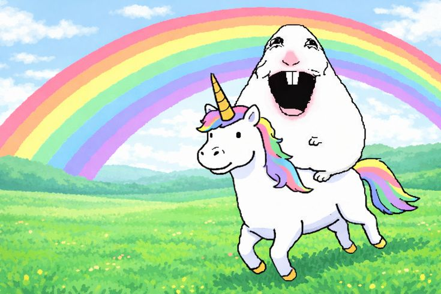
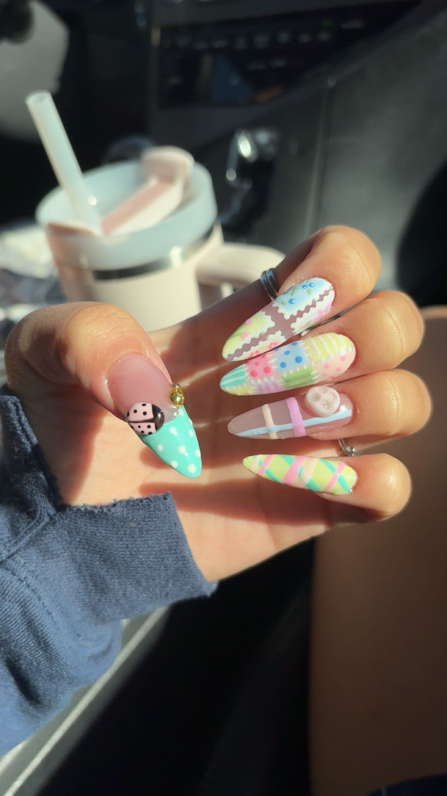

Hello! my name is Kelsey, I am a rising junior and this is my final project for my computer science class. In this website I will tell you a little bit about myself and tell you about my work.
I love to do my own gel-x nails, and I'm coming up on two years of doing them myself. For sports, I play volleyball and beach volleyball. I also love fostering puppies, and I have fostered 11 total throughout 4 different litters. This portfolio is to showcase my skills and growth throughout this year and maybe inspire others to start on their journey. I have grown so much this year, and I love comp sci and how easy it is to really make everything so personalized to you, and how to make it so cute. My work has improved so much since August. I am now pretty good at creating apps and projects from scratch. Overall, I'm just so proud of how much I've grown.

